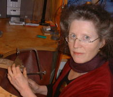

|  |
Corry Ernsting-Suermann, studierte Pharmazeutin, stellt seit 1995 individuelle Schmuckkunst in ihrer eigenen Werkstatt her. Ihr künstlerischer Prozess ist besonders dadurch gekennzeichnet, dass sie sich durch die Eigenschaften und Formen von Materialien inspirieren lässt. In einer Art von Metamorphose entwickeln sich unter ihrer Hand individuelle Schmuckobjekte, die künstlerisch ansprechen und handwerklich exakt gefertigt sind. Gerade ungewöhnliche Materialkombinationen, der Gebrauch seltener Ausgangsmaterialien und der Einsatz unüblicher Techniken stellen für sie einen besonderen Reiz dar und führen zu einzigartigen Ergebnissen: UNIKATES |